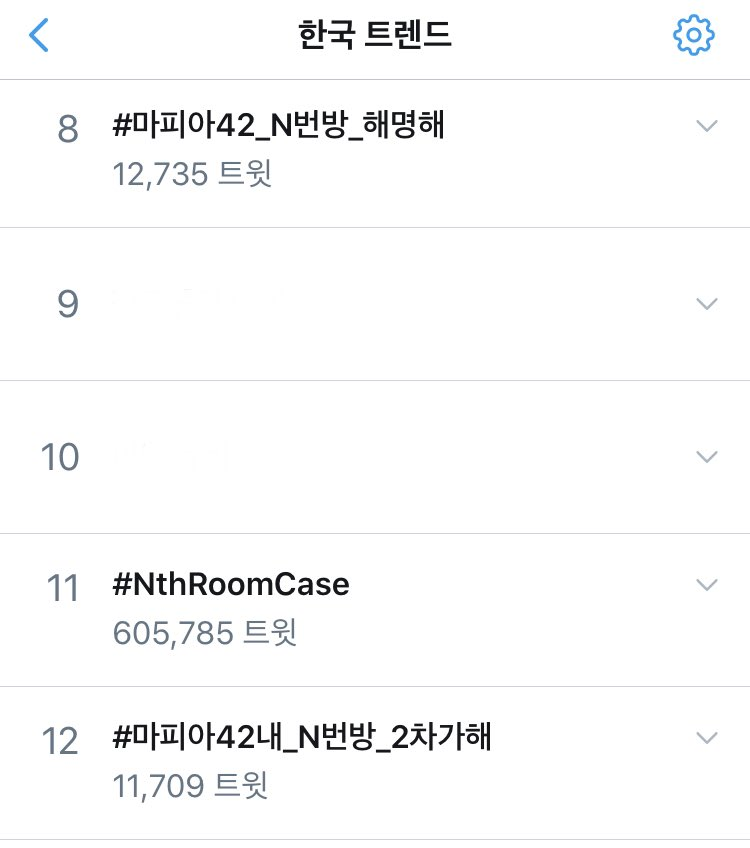

개요
‘실트총공’이란 실시간 검색어와 비슷한 개념의 실시간 트렌드를 조직적으로 올리는 행위로, 이 문서에는 한국의 페미니스트 트위터리안들이 진행한 N번방 관련 실트총공들을 정리한다.
타임라인
2020년 3월 20일 ─ #N번방_박사_포토라인_공개소환
| 2020년 3월 20일 한국 트위터 실시간 트렌드 캡처. |
2020년 3월 19일 오후 4시경 텔레그램 N번방 '박사' 영장심사 기사를 인용하며 “뭐야 포토라인 없이 이게 끝이야? 면상 좀 보자니까?”라고 작성된 트윗이 약 1만여 트윗으로 많은 이들의 지지를 받으며 리트윗되었고, 이것이 발단이 되었다.
20일 해시태그 N번방_박사_포토라인_공개소환은 26만여 트윗으로 한국 실시간 트렌드 1위에 올랐다. 여성들은 N번방 운영자 ‘박사’의 엄중처벌, 포토라인 공개소환 및 신상 공개, 그리고 모든 N번방 가해자들을 향한 제대로 된 처벌을 요구했다.
이를 다룬 청와대 국민청원 텔레그램 n번방 용의자 신상공개 및 포토라인 세워주세요은 하루만에 60만명을 돌파, 최다 청원 인원인 266만 명을 기록하였다.(3월 28일 현재)
2020년 3월 21일
2020년 3월 22일
2020년 3월 23일 ─ 이어지는 실트 총공, ‘방금 총공할 운명’
| 2020년 3월 23일 한국 트위터 실시간 트렌드 캡처. |
N번방 공론화와 함께 강력처벌을 주장하고 사법부와 입법부를 규탄하는 실시간 트렌드 총공이 지속적으로 이루어졌다.
2020년 3월 24일 ─ #마피아42내_N번방_2차가해
 |
| 2020년 3월 24일 한국 트위터 실시간 트렌드 캡처.1 |
모바일게임 ‘마피아42’의 유저들이 게임 내에서 벌어진 N번방사건 2차가해, 운영진 대처에 대해 항의하며 해시태그총공을 진행했다.
당일 오후 열두 시경 마피아42 게임 내 2차가해 공론화 해시태그는 1만2천여 트윗으로 한국 트위터 실시간 트렌드 8위에 올랐으며, 최종 2만 3천여 트윗을 기록했다.
이 목차는 실제 있었던 사건에 대해 다루고 있습니다.
명예훼손죄, 모욕죄 등에 해당하는 위법한 내용이 담기지 않도록 주의해주세요.
2020년 3월 25일 ─ 범죄자 미화·신격화에 대한 비판
| 2020년 3월 25일 오후 12시경 한국 트위터 실시간 트렌드 캡처. |
| 2020년 3월 25일 오후 3시경 한국 트위터 실시간 트렌드 캡처. |
박사방 운영자 26세 남성 조주빈은 포토라인에서 “멈출 수 없었던 악마의 삶을 멈춰줘 감사”하다고 발언했다. 해당 발언을 통해 범죄자를 ‘악마’와 같이 캐릭터로 소비하는 기사들이 쏟아지자 비판이 이어졌다.
해당 실시간 트렌드를 통해 “언론에서 범죄자새끼들한테 악마라는 타이틀 달아주는 것 좀 안 했으면. ... 조두순 사건 때도 악마가 돌아온다고 언급하고. 그 새끼들은 쓰레기만도 못한 범죄자 새끼들인데 왜 악마로 신분상승 시켜주냐?”와 같은 의견이 공유되었다.
당일 오후 열두 시 ‘조주빈 악마’ 키워드는 3만5천여 트윗, ‘없었던 악마’와 ‘자의식 과잉’ 키워드는 각각 2만 9천 · 2만 7천여 트윗을 기록했고 오후 세 시경 ‘악마 이OO’ 키워드는 4만 7천여 트윗을 기록했다.
2020년 3월 26일
2020년 3월 27일 ─ #N번방재판_오덕식_배제해
| 2020년 3월 27일 한국 트위터 실시간 트렌드 캡처. |
오덕식 판사는 최종범 사건의 판결과 2차 가해, 그 외에도 성인지감수성이 부재한 성범죄자들 대상의 여성혐오적인 판결로 여러 차례 물의를 빚었다. 오덕식 판사가 ‘N번방’ 사건의 담당 판사가 되면서 이에 대해 항의하는 해시태그운동이 진행되었다.
해시태그 총공 트윗을 통해 “판사 이름 듣고 안도하고 있을 26만 명을 생각하니 피가 거꾸로 솟는 기분이고 매일이 분노와 절망으로 전쟁 같고 피곤하지만 지금이 아니면 더 끔찍한 지옥을 우리 모두가 보게 될 것 같아서 또 힘을 내고 힘을 보탠다”와 같은 의견이 공유되었다.2
해당 해시태그는 당일 오후 네 시경 5만 4천여 트윗으로 한국 실시간 트렌드 1위에 올랐으며, 오후 여섯 시경 6만여 트윗으로 실트 3위에 올랐다.
위 청원이 공유되기 이전 내용을 정반대로 오도하는 청원이 공유된 적 있었다. 악의적으로 작성된 청원으로 추정된다.
| 유사한 제목의 악의적 청원 캡처 |
2020년 3월 28일 ─ N번방 ‘영유아’방 공론화
| 2020년 3월 28일 한국 트위터 실시간 트렌드 캡처. |
“N번방에는 유아방 영유아방이 따로 있어요 믿기 어렵지만 피해자중에 아기가 있습니다”라는 내용의 게시물이 1.9K 리트윗을 받으면서 N번방 내 존재했던 유아·영유아 대상의 공론화가 이루어졌다.
해당 해시태그는 당일 오후 네 시경 1만여 트윗으로 한국 트위터 실시간 트렌드 4위에 올랐다.
2020년 3월 29일
2020년 3월 30일
2020년 3월 31일 - #N번방은_판결을_먹고_자랐다
 |
| 2020년 3월 31일 한국 트위터 실시간 트렌드 캡처. |
2020년 4월 23일
2020년 3월 23일 트위터에서 N번방 범죄에 대한 관심을 촉구하기 위해 익명의 유저가 공론화 계정을 생성하였다. 많은 사람들이 트윗에 N번방 관련 태그를 붙여 트위터 실시간 트렌드에 올리는 것이 목적이다. 해외의 트위터 유저나 N번방 사건의 심각성을 모르는 유저들에게 N번방 사건을 알리고, 마땅한 처벌이 이루어질 때까지 관심을 갖고 지켜보자는 공익 목적의 태그 운동이다.
| 날짜 | 태그 내용 | 비고 |
|---|---|---|
| 2020. 3. 23 | #nthroom_stop #NthRoomCase | n번방 사건이 어떤 것인지 알리는 이미지를 첨부하도록 권유하였다.정보 이미지는 영어, 중국어, 일본어, 프랑스어, 러시아어, 스페인어로 번역되었다.n번방, 텔레그램, 성폭력 관련 청와대 청원 페이지를 게시하여 참여를 촉구하였다. |
| 2020. 3. 24 | #nthroomcrime #nthroom_chat | |
| 2020. 3. 26 | #stop_the_nthroom | #nthroomcrime이 실시간트렌드에 올라가지 않는다는 제보를 받는다. |
| 2020. 3. 27 | #NOMORE_NTHROOM | 고 구하라씨와 최종범의 재판에서 구하라씨의 불법촬영 영상을 변호사의 만류에도 불구하고 법정에서 보았으며 불법촬영 재판에서도 남성가해자에게 집유판결만 내리는 등 남성에게만 유리한 판결을 내린 판사 오덕식이 N번방 사건의 공범의 재판을 맡게 되었다는 소식을 전한다. |
| 2020. 3. 28 | 중복되거나 거의 복제된 콘텐츠는 집계되지 않는다고 하니 트윗을 복사 붙여넣기하여 게시하거나 이전에 중복된 태그는 쓰지 말아 달라고 요청한다. | |
| 2020. 3. 29 | #nthroomcrime_out | 실시간 트렌드는 증가폭이 높아야 순위권에 올라가기 쉽기 때문에 매일매일 다른 태그를 써 줄 것을 요청한다. |
| 2020. 3. 31 | #SAYNOTO_NTHROOM | |
| 2020. 4. 3 | #ARREST_NTHROOM | |
| 2020. 4. 4 | #PUNISH_NTHROOM | 많은 트윗 작성보단 모든 트윗의 알티 마음을 10이상으로 만드는 것이 중요하며, 복붙과 복붙해 내용만 추가하는 등 비슷한 트윗은 트위터 운영규칙상 해시태그 전체가 스팸으로 처리된다는 정보를 전한다. |
| 2020. 4. 6 | #THE_NEXT_NTHROOM | |
| 2020. 4. 8 | #BAN_NTHROOM | |
| 2020. 4. 9 | #SUPPRESS_NTHROOM | #BAN_NTHROOM 이 한국과 세계 실시간 트렌드에 모두 올라갔다 내려왔기 때문에 해시태그를 변경할 것을 요청한다. |
| 2020. 4. 10 | #SHUT_THE_NTHROOM | |
| 2020. 4. 12 | #HELP_VICTIMS_OF_KOREA | |
| 2020. 4. 13 | #KOREA_NEEDS_TOUGHER_PENALTIES | 태그를 확산시키기 위해 트위터 유저들이 연대를 요청하여 쓴 '무작위 언급'이란 단어가 실트에 올랐다. |
| 2020. 4. 14 | #KOREA_WANTS_JUSTICE | |
| 2020. 4. 15 | #STAND_AGAINST_NTHROOM | |
| 2020. 4. 17 | #TELEGRAM_BYSTANDING_NTHROOM | |
| 2020. 4. 18 | #RELEASE_NTHROOM_OFFENDERS_LIST | 이전 해시에서 텔레그램이라는 기업명이 언급되어 스팸 처리된 것으로 판단되었다. |
| 2020. 4. 19 | #FIGHT_AGAINST_NTHROOM | 1.해시 하나 이상 사용 2.같은 말 반복 등 비슷한 트윗 둘을 금지하고 사건이 설명된 외국어 사진 첨부를 부탁한다. 큰 목적은 해외에 n번방, 박사방을 비롯한 텔레그램 디지털 성범죄를 알리는 것이라 설명한다. |
| 2020. 4. 19 | #REMEMBER_NTHRO0M | 모니터링 결과 트위터 실시간 트렌드 태그 중 "NthRoom"이 스팸 처리된 것으로 확인되었다. |
| 2020. 4. 21 | #PROTECT_NTHRO0M_VICTIMS | 단어 "NTHROOM" 의 스팸처리가 풀렸음이 확인된다. |
| 2020. 4. 22 | #WOMEN_STAY_STRONG | |
| 2020. 4. 24 | #엔번방이_마지막기회다 (오전 8시 총공) #누구를_위한_1년인가 (오후 11시 총공) | N번방 사건의 전말을 알리는 아랍어 번역문을 올린다. |
| 2020. 4. 25 | #NTHRO0M_IS_FELONY (오전 8시 총공) #FOCUS_ON_NTHRO0M (오후 11시 총공) | |
| 2020. 4. 26 | #WE_NEVER_END (오후 11시 총공) |